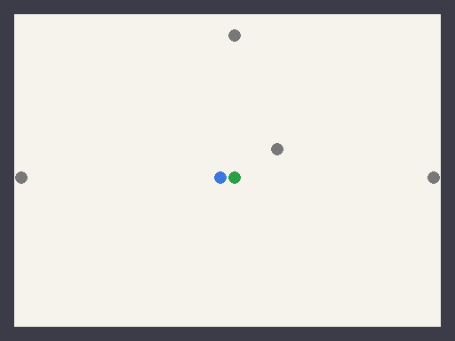

← catalogue
marais_endormis_overworld

- genre : rpg
- jeu : pestouille-rpg
- licence : MIT (verified)
- source : https://forgejo.pingfr.duckdns.org/david/pestouille-rpg.git @ ca7042f97f1e — content/maps/marais_endormis/overworld.json
- dimensions : 32×24
- mécaniques : checkpoints, transitions
- versions publiées : —
- contenu :
4fb8399e84b16960